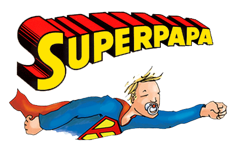
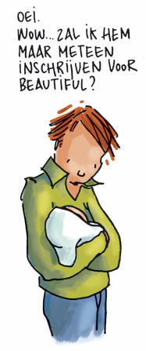

Uit een onderzoek van Eurostat, de onderzoeksafdeling van de Europese Commissie, blijkt dat de Belgische en Deense vader de eerste plaats delen op vlak van goede babyzorgen. Op de laatste plaats staat, volgens de Europese studie, de Fransman, die amper zes procent van zijn tijd met zijn kind doorbrengt. Twaalf procent van zijn tijd, steekt de Belgische papa in het spelen met en het verzorgen van zijn kleine uk: van verhaaltjes lezen en spelen tot luiers verversen, badjes geven en voeden. De vader die enkel nog het rapport tekent en kijft is al een aantal jaren vervangen door de 'nieuwe vader'. Toch spendeert de Belgische man nog altijd minder tijd aan zijn zoon of dochter dan de Belgische moeder die ongeveer aan het dubbel zit.

Als je papa wordt of pas papa bent dan ben je daar meer dan vol van. En waar je vol van bent daar loopt je hart van over. Maar het zal je maar overkomen, je staat met je vrienden aan de toog van een trendy café en je vrouw belt: junior krijst! Junior krijst al 3 dagen lang en eigenlijk weet je het allemaal niet goed meer. Je ziet de kleine zielsgraag, maar heel eventjes wens je junior bij je schoonmoeder. Je vragen en angsten gaan dieper dan je op dat moment toegeeft aan je vrienden, want junior verdient alleen de mooiste verhalen!